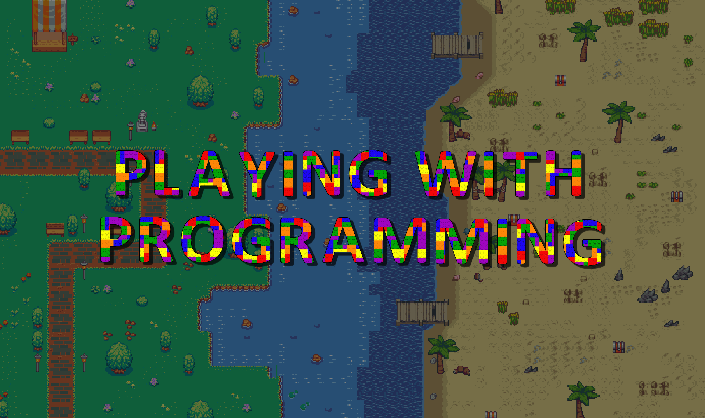

About Me
My name is Timothy Zammit and I have finished my final year in Software Development from the University of Malta. I am adept in a variety of technologies,
however, through my course projects I developed a keen interest in frontend development as well as video game design and data structures and algorithms.
Apart from this, I also gained experience in team management and realised my eagerness to develop my talents on this area.
I am highly adaptable and empathetic with a love of solving
problems with relentless deteremination.
Previous Experience

GAPT - Playing With Programming
GAPT is a group assignment given in the second year of the Software Development Course and is used to see how students apply their knowledge to a real world project.
This project is a video game used to teach children how to code and was in high consideration to be implemented at Esplora Interactive Science Center. To learn more
about the project and try out the video game clickhere
My name is Timothy Zammit and I have finished my final year in Software Development from the University of Malta. I am adept in a variety of technologies,
however, through my course projects I developed a keen interest in frontend development as well as video game design and data structures and algorithms.
Apart from this, I also gained experience in team management and realised my eagerness to develop my talents on this area.
I am highly adaptable and empathetic with a love of solving
problems with relentless deteremination.